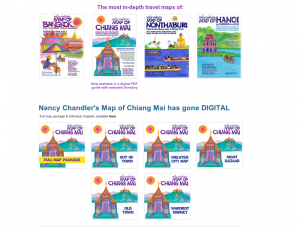

In Chiang Mai, Nancy Chandler needs no introduction. Almost everyone who has spent more than a few weeks in Chiang Mai will have discovered her colourful, quirky little map crammed with so many places that it’s a wonder how she ever 1) managed to walk all those streets and find the locations, and 2) managed to fit them all on one map! Just last week I saw a woman, hiding away in the corner of a cafe, lazily scanning the Bangkok version of the map over a latte. Every now and then her eyes would widen and she’d move closer to the map, excited that she may have just discovered a new secret spot in the City of Angels. I used to do the very same thing with Nancy’s Chiang Mai map, and still to this day find new places thanks to it.

For those of you who are not familiar with the name Nancy Chandler, she was an American artist and creator of the delightful maps of Bangkok and Chiang Mai. After moving to Bangkok in 1969, and exploring the city with her two young daughters, the American Women’s Club of Thailand (AWC) asked Nancy to draw a map of all the major markets in Bangkok for the club magazine. Expats were so impressed by the detail in her map that “the magazine issue with the map”, as they called it, was reprinted twice before the AWC suggested Nancy start publishing it independently. In 1974, she established Nancy Chandler Graphics Ltd. In 1980, Nancy visited Chiang Mai and the AWC asked for a simple map of the city, which subsequently grew into her first map on the Lanna capital. Sadly, Nancy passed away in 2015, but her legacy, work and art is still holding strong, and with her daughter Nima at the helm of the Nancy Chandler Map enterprise, the maps, and her greeting cards and gifts are now available for online, the Chiang Mai map just recently offered in digital form for the first time this year.

Recently, I was lucky enough to ask Nima some questions about the maps and her talented mother:
The question everyone wants to ask is how much time goes into researching these maps? Is each street explored individually by Nancy and her team, or is technology like Google street view used?
Updating the maps is an ongoing project. I took over research from my mother about 20 years ago, and am constantly scanning newspapers, magazines, Facebook feeds, and other sources for openings and closings. When I begin work on a new edition, I collate all the information collected and spend weeks walking and driving around town checking what has closed, what has opened and what might be about to open/close. Chiang Mai can change in the blink of an eye! In recent years, I have had friends help with research as our time to print has been shortened, 6 months of work now condensed into 3 months, and my responsibilities in our small business much greater than just updating the maps which is a full time job. Usually I will go to Chiang Mai for a month – walking Warorot, the Night Bazaar, the Old Town, Nimmanhaemin, and every mall, then driving the rest of the city and its outskirts in search of changes. If I am not locked up at night in a hotel room making sense of my notes, I can be found out with friends who tip me off to new things (it’s a tough job, but someone has to do it)! I then return to Bangkok to prepare the artwork and directory, which takes double the time it does to walk or drive an area. I usually pop back up to Chiang Mai for a last minute check right before we go to print, but, for the current edition, online resources and some very helpful friends in Chiang Mai made that unnecessary.
For locations and accurate descriptions, I check out Facebook pages and websites of places going on the map as well as reviews. Google Street View only played a role a handful of times when I needed to confirm a location of one place to another when my notes were not clear. Google Street View is rarely current and can’t give me the same feel for a place as doing a walk or drive by in person!
How is it decided upon, whether a place will make the map or not? And how does it all fit onto one map?
Nancy’s maps were a lot lighter in the past. There were less places in Chiang Mai to begin with (I remember when the first air conditioned coffee shop opened), and Nancy limited listings to places that were established (open at least 2 years) or highly recommended by her friends in Chiang Mai.
I am a bit more “methodological”. As I saw guidebooks shrinking their listings to five places in each area, I expanded Nancy’s listings even further to be as comprehensive as possible for both expats and tourists. I, myself, wanted to know what’s where everywhere. I wanted to include every boutique hotel, guest house, vegetarian restaurant, and educational experience I could find for visitors and every gym, western-size clothing shop, and more for expatriates. I delight when I find places like the fencing and archery schools, so unexpected but likely to make someone’s day. In the last two editions, I started cutting back on some listings as I realize people will find them online when needed (eg. dry cleaning places) or don’t need them the same way anymore (most visitors book hotels before buying the map these days, so there are less on the map).
What has stayed the same, as we say on the map: we pick places because we think they might be of interest to some (such as the cultural lectures and art films at the Alliance Francaise), are colorful (the backstreets of Warorot and the Hmong market), or fun (‘traditional Lanna’ portrait studios are a must). We don’t take tea money or accept free housing or food. We just ask ourselves if a place might excite, surprise, be needed, or, in some cases, just help someone get their bearings.
Squeezing everything onto the map itself has been made much easier since we started doing artwork digitally, but there are still places worthy of mention that we can only add to the directory. That’s why we encourage people to take the time to browse the directory for items of interest. You never know what might be hiding in there…
What has been the most amazing discovery (place/ restaurant/temple/nature spot) through researching the maps? Did this this place make the final version? Can you recommend some must visit spots?
This edition, for me, the highlight was the unexpected discovery of Chez Khao Soy, an understated riverside delight, as well as new places to take in the views out-of-town (I will leave it to map readers to identify these).
I would rather not list any other ‘must visit’ spots as we prefer readers explore all their options and pick out what might interest them most (eg. rice farming classes instead of a massage course, gourmet hideaways or cheap eats, unique little art galleries or Thai cinema in a modern mall, all are on the map).
Why was Hanoi chosen as the first, non-Thai map to be produced? What other cities are going to be mapped in the future?
Hanoi happened when two expatriates, inspired by our Bangkok map, created their own map of the city in such a similar style and format that we had a decision to make: sue them or take them on as authors. We chose the latter after realizing they had done a very impressive job research-wise and just needed a some help with content, editing and illustration. Many others over the years have expressed interest in creating their own city maps in our style, but few have ever completed the job, the task much more difficult than many think as it involves a wide range of skill sets (research, design, writing, illustration, printing, distribution, sales, etc.).

As for our own plans, we are a very small publishing company in a world largely turning to free maps and apps online. Our only funding remains the sales of our products. Expanding our titles would require building a larger team of people not driven by profit but by the thrill of the discovery. Taking advertising dollars would compromise our founding purpose. In sum, our days are numbered but we will continue to update our maps as long as we continue to be able to pay the bills. Letters and emails from fans help too! Whoever heard of someone sending a map maker thank you notes, but, trust me, we get them!
It’s impressive that something so physical as a map can be successfully adapted to the online world. Were there any difficulties? And when will Bangkok and Chiang Mai maps be available as apps?
We’re really only just experimenting with digital versions of our maps. We have a GPS-friendly app of Hanoi created by a very kind fan seeking to learn coding. It is not your standard app, based on an image of the paper map, no changes when you zoom in and out which means you see everything in an area no matter how much you zoom in and out.
For Chiang Mai, we chose to offer the new edition as a PDF or e-book instead of an app as we cannot afford to invest in a professional app with limited prospect of returns (there are so many free map apps now). The Bangkok map will follow as a PDF when we update it later this year. Hopes are the PDF versions will enable us to reach people who are travelling lighter than they used to but are still interested in really getting to know a city, not just rely on top ten lists.
How has Chiang Mai changed since the first map? What are the general thoughts of Thailand’s economic growth?
How has Chiang Mai changed? So much and so little. The main recollections people have after a visit are probably similar: images of the temple or chedi around the corner, spires in the moonlight, street food finds, busy markets, and elephant experiences. But there was a time not so long ago when there were many more unique craft shops, quaint but not pretentious little riverside cafes, and only a handful of family-run cooking and massage schools.
Now, the city has modern malls, tourist-oriented walking street markets, more traffic (Nancy did her first Chiang Mai maps by bicycle), too many cooking and massage schools (plus MMA and boxing classes are now in favour), fancy estates lining the new ring roads, air-conditioned coffee shops on every corner, boutique hotels redefining the term boutique, trendy hostels replacing charming, yet creaky, old guest houses (and visitors who don’t do their research choosing a dorm bed at double the price of what one can still find a whole room for in the latter). Man made attractions (the Night Safari, zip lines, water parks, go karts) are added excitement for some, odd old treasure-filled museums like Uncle Jack’s and Wat Rong Meng are still around for others. The foodie scene has grown immensely with something for everyone now. Ride-sharing services make getting around much easier and more reasonably priced, available around the clock as well. In sum, some progress is good!
What can we expect from the Nancy Chandler team in the future?
Anyone in the next generation interested in taking over? After 20 years of building her one woman business, my mother handed the baton to me. I am now wrapping up 20 years and getting ready to hand the baton on to someone with new vision and energy in turn. We would love to continue to see Nancy’s maps inspire people to explore with confidence. We have a great, albeit small, team of hard workers. But we don’t want to see the company go commercial and turn the Nancy Chandler brand into something it was never meant to be… I am guessing we have one or two new editions in us, but after that, who knows?
Thanks so much for your time Nima, and for enlightening us into the world of Nancy Chandler maps. The Chiang Mai one has long been a favourite gift of mine to friends visiting and the Bangkok one is on my list of things to study this summer!
If you are interested in getting your own map see www.nancychandler.net or order the full Chiang Mai map package here.